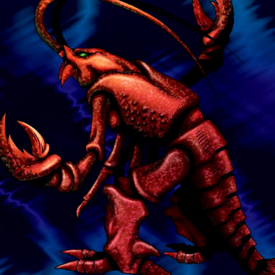

Zarigun

STATS
ATK: 600
DEF: 700DECK COST
Deck Cost per Card: 13Fusion List (5 Possible Fusions)
- Zarigun + Koumori Dragon = Spike Seadra
- Zarigun + LaLa Li-oon = Bolt Escargot
- Zarigun + Mega Thunderball = Bolt Escargot
- Zarigun + Psychic Kappa = Hyosube
- Zarigun + Yamatano Dragon Scroll = Spike Seadra